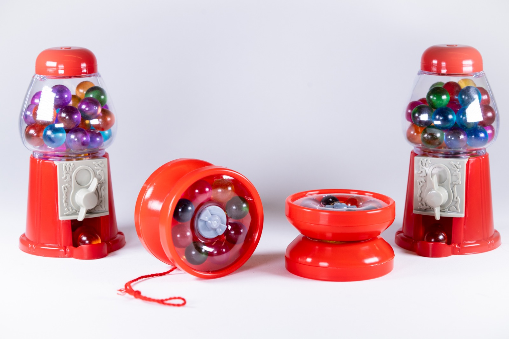
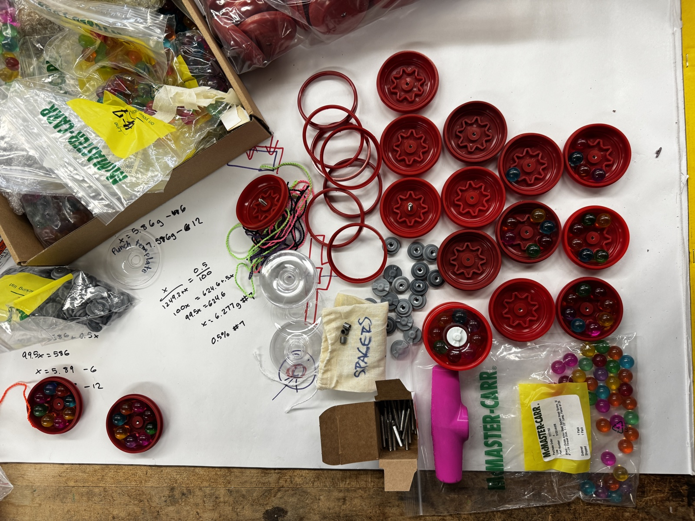

Mass Manufactured Yo-yo
Fifty-plus injection-molded yo-yos with a press fit and thermoformed parts.
2024 · MIT 2.008 · CAM, Fusion 360
I completed this project as part of a six person team in MIT course 2.008: Design & Manufacturing II. The purpose of this class is to apply design principles to design at scale. We dive into different manufacturing techniques (think injection molding, casting, thermoforming), and calculate various parameters to predict manufacturing success, lead times, and more. On top of this, we design and build a set of 50+ yoyos to mend mind and hand into one.
My team's design is inspired by a gumball machine. It incorporates a few unique injection molded parts, a single thermoformed part, and 8 "gumballs" per side. The gumballs are held in place by the thermoformed part, which is secured to the yoyo through a press fit and a threaded insert on one of the parts. My main responsibility on the team was designing and manufacturing the molds for the press fit components. I also led the statistical analysis to estimate our yoyo's measures of central tendency for the press fit interference. Some tools I used were Fusion360 for CAD/CAM, Haas CNC Mill to make the molds, and Excel for statistical analysis.
Success in 2.008 is measured by the proportion of your team's yoyos that successfully survive a 3 ft. drop test without the press-fit component falling off. Our team was unlucky on our first try, and our yoyo exploded. The next nine tests all passed, and we were unable to recreate the failure even after a dozen extra tests. Our measured interference was .014" between the press fit components.
